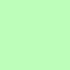
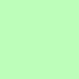

Basic usage
Test a basic block filter.

Example Content

Steps
- Add filter #1 and filter #2.
- Clear Cache and Refresh page.
- Both red images should be blocked.
Filters
-
URL Filter: /AB_Test/generic.png
General CSS Filter (All Sites): img[src="AB_Test/generic.png"]
-
URL Filter: rebelwcause.github.io/AB_Test/specific.png
Site CSS Filter: rebelwcause.github.io##img[src="AB_Test/specific.png"]
Full Path
Test that a blocking filter describing a full path blocks its target.

Example Content
Steps
- Add filter #1.
- Clear Cache and Refresh page.
- The red image should be blocked and the space collapsed.
Filters
Partial Path
Test that a blocking filter describing a partial path blocks its target.

Example Content
Steps
- Add filter #1.
- Clear Cache and Refresh page.
- The red image should be blocked and the space collapsed.
Filters
Dynamic
Test that a blocking filter describing a path of a resource that is later dynamically added to the page blocks its target.
Example Content
Steps
- Add filter #1.
- Clear Cache and Refresh page.
- The red image should be blocked and the space collapsed.
Filters
Link based popup
Test that a filter works on a link based popup.
Steps
- Add filter #1.
- Clear Cache and Refresh page.
- Click the link above.
- The popup opened should be blocked.
Filters
Script based popup (tab)
Test that a filter works on a script based popup.
Steps
- Add filter #1.
- Clear Cache and Refresh page.
- Click the link above.
- The popup/tab opened should be blocked.
Filters
Script based popup (window)
Test that a filter works on a script based popup.
Steps
- Add filter #1.
- Clear Cache and Refresh page.
- Click the link above.
- The popup/window opened should be blocked.
Filters
Custom Tag Selector
Test that an element hiding filter using a Custom tag selector hides its target.
Target
Example Content
Target
Steps
- Add filter #1 and filter #2.
- Clear Cache and Refresh page.
- Both red images should be hidden and the space collapsed.
Filters
ID Selector
Test that an element hiding filter using an ID selector hides its target.
Steps
- Add filter #1.
- Clear Cache and Refresh page.
- The red element should be hidden and the space collapsed.
Filters
ID Selector with double curly braces
Test that an element hiding filter using an ID selector with two curly braces hides its target.
Steps
- Add filter #1.
- Clear Cache and Refresh page.
- The red element should be hidden and the space collapsed.
Filters
Class Selector
Test that an element hiding filter using a class selector hides its target.
Steps
- Add filter #1.
- Clear Cache and Refresh page.
- The red element should be hidden and the space collapsed.
Filters
Descendant Selector
Test that an element hiding filter using a descendant selector hides its target.
Steps
- Add filter #1.
- Clear Cache and Refresh page.
- The red element should be hidden and the space collapsed.
Filters
Sibling Selector
Test that an element hiding filter using a sibling selector hides its target.
Steps
- Add filter #1.
- Clear Cache and Refresh page.
- The red element should be hidden and the space collapsed.
Filters
Attribute Selector 1
Test that an element hiding filter using an attribute selector hides its target.
Steps
- Add filter #1.
- Clear Cache and Refresh page.
- The red element should be hidden and the space collapsed.
Filters
Attribute Selector 2
Test that an element hiding filter using an attribute selector hides its target.
Steps
- Add filter #1.
- Clear Cache and Refresh page.
- The red element should be hidden and the space collapsed.
Filters
Attribute Selector 3
Test that an element hiding filter using an attribute selector hides its target.
Steps
- Add filter #1.
- Clear Cache and Refresh page.
- The red element should be hidden and the space collapsed.
Filters
Starts with Selector 1
Test that an element hiding filter using a starts with selector hides its target.
Steps
- Add filter #1.
- Clear Cache and Refresh page.
- The red element should be hidden and the space collapsed.
Filters
Starts with Selector 2
Test that an element hiding filter using a starts with selector hides its target.
Steps
- Add filter #1.
- Clear Cache and Refresh page.
- The red element should be hidden and the space collapsed.
Filters
Ends with Selector 1
Test that an element hiding filter using a ends with selector hides its target.
Steps
- Add filter #1.
- Clear Cache and Refresh page.
- The red element should be hidden and the space collapsed.
Filters
Contains
Test that an element hiding filter using a contains selector hides its target.
Steps
- Add filter #1.
- Clear Cache and Refresh page.
- The red element should be hidden and the space collapsed.
Filters
IFrames
Test blocking content in iframes.
Steps
- Add filter #1.
- Clear Cache and Refresh page.
- The red elements inside the iframe should be hidden and the space collapsed.
Filters
Script Scanning/Blocking
Test Script Scanning/Blocking.
Steps
- Add filter #1.
- Clear Cache and Refresh page.
- The red element should be hidden and the space collapsed.
Filters
Site CSS Injection
Test Site CSS Injection.
Steps
- Add filter #1.
- Clear Cache and Refresh page.
- The page background should be changed to light red.
Filters
Special Rule Blocking test
spy1.css
spy2.css
spy3.css
spy4.css
spy5.css
spy6.css
spy1.js
spy2.js
spy3.js
spy4.js
spy5.js
spy6.js
There should be a ban Google image here!
There should be a ban Google image here!
There should be a ban Google image here!
Generic Blocking Test Results (May not always be accurate!):
Filters
========
URL Pattern Rules
/AB_Test/generic.png
rebelwcause.github.io/AB_Test/specific.png
rebelwcause.github.io/AB_Test/full-path.png
/AB_Test/partial-
rebelwcause.github.io/AB_Test/link.html
rebelwcause.github.io/AB_Test/script-tab.html
rebelwcause.github.io/AB_Test/script-window.html
/AB_Test/dynamic.png
CSS All Site Filters
img[src="AB_Test/generic.png"]
img[src="AB_Test/partial-path.png"]
img[src="AB_Test/dynamic.png"]
CSS General Filters
custom-ttag1
CSS Site Filters
rebelwcause.github.io##img[src="AB_Test/specific.png"]
rebelwcause.github.io##img[src="AB_Test/full-path.png"]
rebelwcause.github.io##custom-ttag2
rebelwcause.github.io###eh-id
rebelwcause.github.io##div[id='{{eh-id}}']
rebelwcause.github.io##.eh-class
rebelwcause.github.io##.testcase-area > .eh-descendant
rebelwcause.github.io##.testcase-examplecontent + .eh-sibling
rebelwcause.github.io##div[width="100"][height="100"]
rebelwcause.github.io##div[href="http://testcase-attribute.com/"]
rebelwcause.github.io##div[style="width: 200px;"]
rebelwcause.github.io##div[href^="http://testcase-startswith.com/"]
rebelwcause.github.io##div[style^="width: 201px;"]
rebelwcause.github.io##div[style$="width: 202px;"]
rebelwcause.github.io##div[style*="width: 203px;"]
rebelwcause.github.io##.testAd
Script Scanning Filters
ab_spy_test_element::false
CSS Site Injection
rebelwcause.github.io##body { background-color: #FFEEEE !important; }
Builtin Wildcard Pattern Rules
"rebelwcause.github.io": ["_test/spy7"]
"rebelwcause.": ["/spy8"]
"rebelwcause.github": ["/spy9"]
Builtin Type Pattern Rules
"rebelwcause.github.io/ab_test/spy1": {"image": true, "script": true}
"rebelwcause.github.io/ab_test/spy2": {"image": false, "script": false}
"rebelwcause.github.io/ab_test/spy3": {"image": true, "script": true, "tp": true}
"rebelwcause.github.io/ab_test/spy4": {"image": true, "script": true, "tp": false}
"rebelwcause.github.io/ab_test/spy5": {"image": false, "script": false, "tp": true}
"rebelwcause.github.io/ab_test/spy6": {"image": false, "script": false, "tp": false}
"cdn.search.brave.com/serp/v2/_app/immutable/assets/": {"stylesheet": true, "font": true, "tp": true}
Suggested Filters
CSS Site Filters
brave.com###usage-metrics-notice, #discussions, #related-queries, .standalone
brave.com##div[id="searchbar-home"] > div[class^="download-button"], footer[class="svelte-13jmp34"]
swisscows.com##div[class="form-wrapper"] > ul[class="tagline-list"]
swisscows.com##.home, .footer, .footer-full, .home-link-instruction
swisscows.com##.badge-tg, .badge-vpn, .badge-email
swisscows.com##.search-counter, .widget, .a11t-privacy
swisscows.com##.item-a8r-web, .a8r-product-collection
startpage.com##div[class="layout-web__footer"], div[class^="feedback-button-container"]
startpage.com##button[data-testid="Shopping"]
startpage.com##.home-hero-tagline
qwant.com##a[href="https://addons.mozilla.org/en-US/firefox/addon/qwant-the-search-engine/"]
qwant.com###root div[data-testid="home"] main section:not(:nth-of-type(1))
qwant.com##footer
mojeek.com##body > div[class="main"] > div[class="pop-in js-pop"]
mojeek.com##div[class="main"] > div[class="bullets"], div[class="main"] > div[class="para"]
mojeek.com##.right-col
ecosia.org##.full-footer, .layout__footer, .section-wrapper, .above-fold-section
ecosia.org##.main-header__notifications, .main-header__install-cta, .web__sidebar
ecosia.org##.videos-snippet, .related-queries__bottom, .images-snippet
ecosia.org##a[data-test-id="chat-entry"], section[data-test-id="ad-block-notice"]
duckduckgo.com###features, .footer, .js-feedback-btn-wrap, .minimal-homepage_exploreFeatureScroller__TL5Vx
stackoverflow.com###noscript-warning, #sidebar > .s-sidebarwidget, .mb0, .mt24
stackexchange.com###noscript-warning, #sidebar > .s-sidebarwidget, .mb0, .mt24
superuser.com###noscript-warning, #sidebar > .s-sidebarwidget, #top-hero-div, .mb0, .mt24
askubuntu.com###noscript-warning, #sidebar > .s-sidebarwidget, .mb0, .mt24
canadiantire.ca##.react-loading-skeleton, #BVQAContainer, #BVRRContainer
CSS Site Injection
stackoverflow.com##.s-topbar { margin-top: 0px !important; }
#content { --theme-content-background-color: rgb(248, 255, 248) !important; }
body { background-color: rgb(248, 255, 248) !important; }
stackexchange.com##.s-topbar { margin-top: 0px !important; }
#content { --theme-content-background-color: rgb(248, 255, 248) !important; }
body { background-color: rgb(248, 255, 248) !important; }
superuser.com##.s-topbar { margin-top: 0px !important; }
#content { --theme-content-background-color: rgb(248, 255, 248) !important; }
body { background-color: rgb(248, 255, 248) !important; }
askubuntu.com##body { background-color: rgb(255, 255, 248) !important; }
#question-header { background-color: rgb(255, 255, 232) !important; }
.s-topbar { margin-top: 0px !important; }
#content { --theme-content-background-color: rgb(255, 255, 248) !important; }
jshint.com##.CodeMirror { width: 1100px !important; }
.whiteboard { left: 1150px !important; }

 
